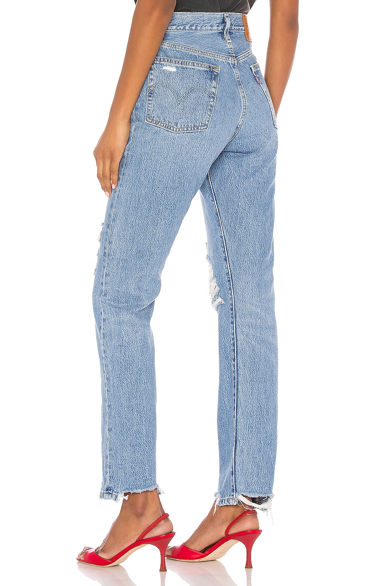
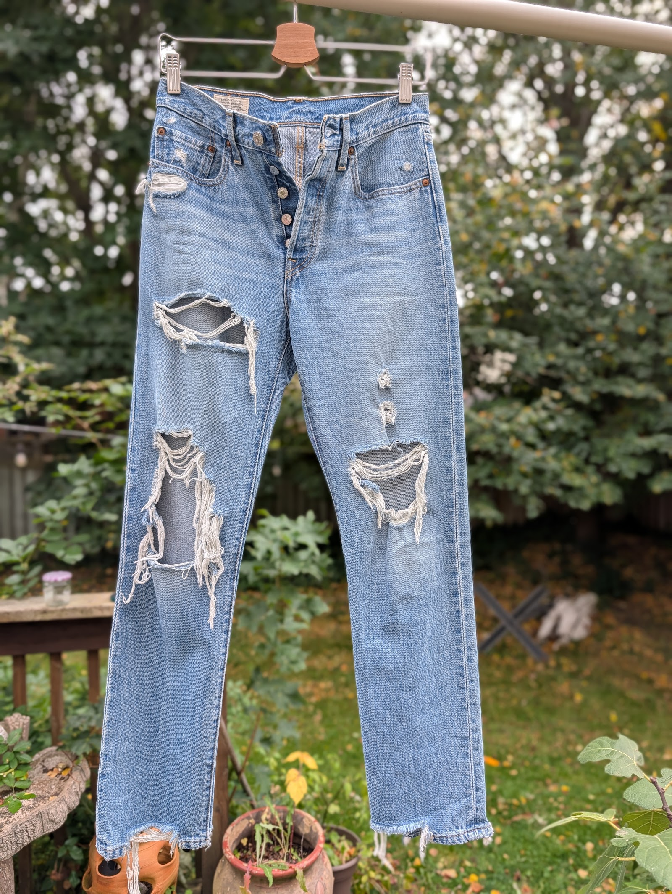
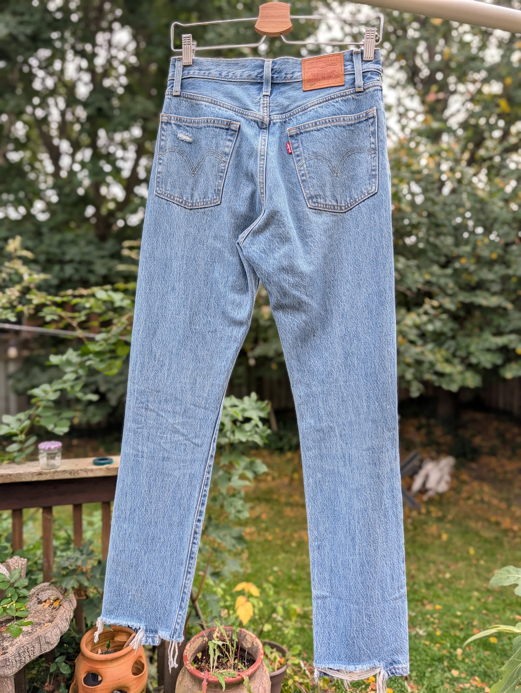
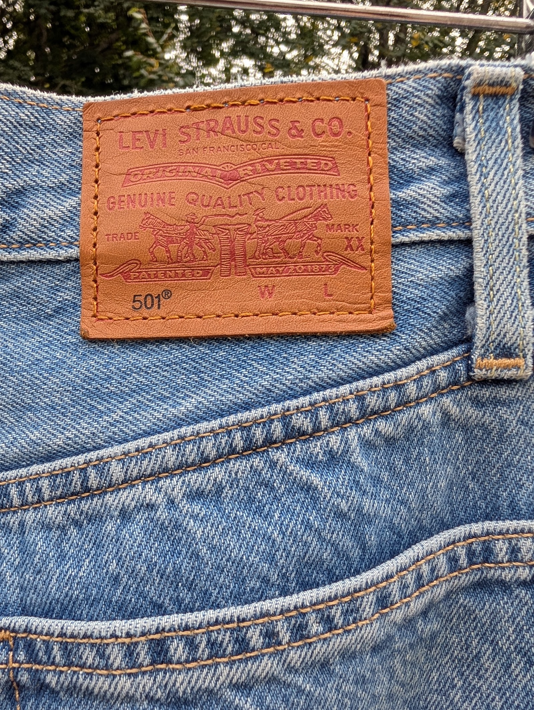

501 Jeans (Luxor Street)
$45.00 $165.00 original price
Barely worn, like new. Heavily distressed by design, with large open rips on both thighs and knees, a ripped coin pocket, and raw frayed hems.
- Brand
- Levi's
- Size
- W26 L30
- Materials
- 100% cotton
- Measurements
- Inseam 30", rise 10.5", knee 15", leg opening 14" (retailer spec)
- Condition
- Excellent
High rise, straight leg, button fly, five pockets, raw frayed hem. Non-stretch denim. The retailer model is 5 ft 10 and wears a 26.